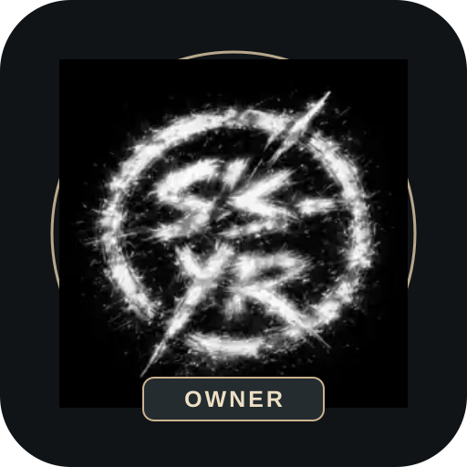

OWNER / CONTACTS
S's-YR 電話帳
管理者専用

管理者アプリ
名刺とは別にホーム画面から開けます。
管理者ログイン
S's-YR電話帳専用のパスワードでログインします。
電話帳専用パスワードを設定
この設定はS's-YR電話帳専用です。MUUMEIのアカウントには影響しません。
招待の受け取り
管理者通知 確認中
招待の受け取りと新着メッセージをこの端末に通知します。
名刺トップのメッセージ
見出しと本文は、名刺の共通URLを開いた全員に表示されます。掲載すると、名刺の新着通知を希望した端末に見出しを送ります。
現在の掲載内容
チャット
共通QRから受け取った相手は、自分で入力した呼び名と受け取り日時が「招待の受け取り」に表示されます。呼び名を押すと、その相手に送れます。
連絡先を追加
この会話を受け取るには、相手本人に専用QRを読み取ってもらうか、リンクを共有してください。
7日間・1回限り。相手のスマホで「チャットを開く」を押すと受け取れます。